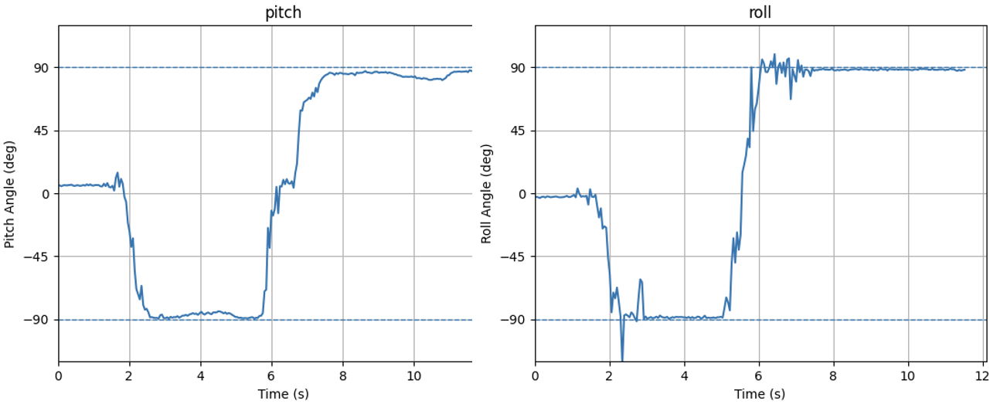
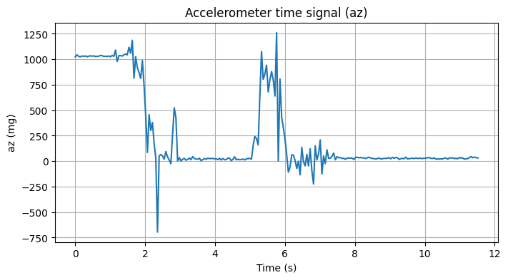
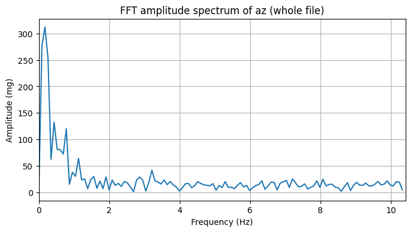
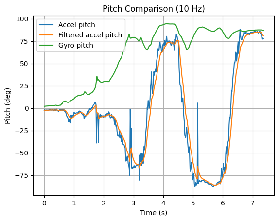
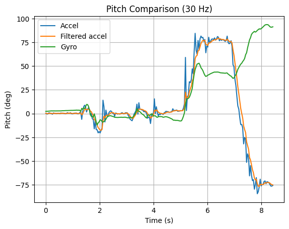
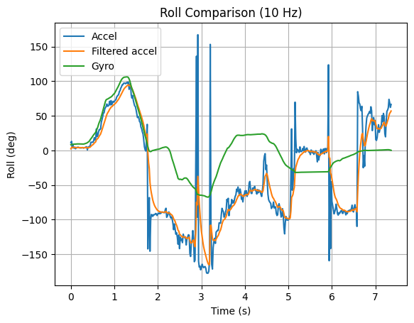
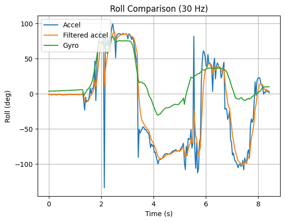
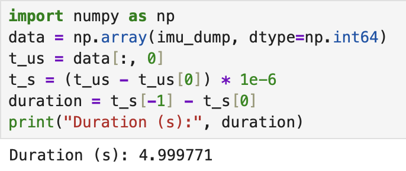
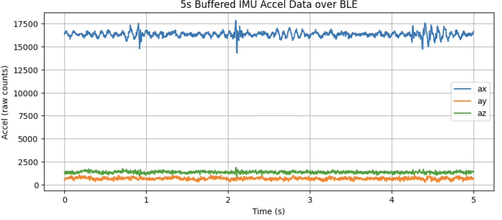

Lab 2: IMU
Objective
The goal of this lab was to acquire and analyze accelerometer and gyroscope data from a 9-DOF IMU on the Artemis board. Pitch, roll, and yaw were computed using sensor models from class, and low-pass and complementary filters were applied to improve robustness. IMU data was buffered onboard and transmitted over Bluetooth for offline analysis in Python.
Setup
I first installed the ICM-20948 Arduino Library using the Arduino Library Manager. The IMU was connected to the RedBoard Artemis Nano using the QWIIC connectors.

To verify the hardware connection and library setup, I ran the example sketch from the SparkFun library. After uploading, the Serial Monitor can successfully print accelerometer, gyroscope, and magnetometer data.
AD0_VAL Discussion
In the example code, the variable AD0_VAL specifies the least significant bit of the IMU’s I²C address. On the SparkFun breakout, the AD0 pin is pulled high by default, so AD0_VAL should be set to 1.
Accelerometer and Gyroscope Behavior
While I ran the example code, the accelerometer readings changed with board orientation. When the board was stationary and lying flat, one axis measured approximately ±1 g due to gravity while the other axes remained near zero, and tilting or flipping the board redistributed this gravity component across axes. And the gyroscope measured angular velocity, which means staying near zero when the board was still and producing clear spikes during rotation, with faster motion would cause a larger values before returning close to zero.
Tasks
1. Accelerometer
In this section, I used accelerometer measurements to estimate board orientation and to understand the effects of noise on these measurements. First, Pitch and roll were computed using the standard equations discussed in class, based on the gravity vector measured by the accelerometer.
$$ \theta_a = \operatorname{atan2}(a_x, a_z) $$
$$ \phi_a = \operatorname{atan2}(a_y, a_z) $$
In Arduino IDE, the accelerometer values were read in milligravity units and converted into pitch and roll angles as follows:
float roll_rad = atan2(ay, az);
float pitch_rad = atan2(-ax, sqrt(ay*ay + az*az));
float roll_deg = roll_rad * 180.0 / M_PI;
float pitch_deg = pitch_rad * 180.0 / M_PI;
To validate the accelerometer-based orientation estimates, I rotated the IMU through known angles and recorded the output. Figures below show the roll and pitch angles as the board was positioned near −90°, 0°, and +90°.
When the board was held flat, both pitch and roll remained near 0°. I rotated the board by approximately ±90° caused the corresponding angle to saturate near ±90°, as expected from the geometry of the gravity vector. Small fluctuations near the extrema were due to sensor noise and slight hand motion during the test.
A short video was also recorded showing the physical motion of the board alongside the serial output to confirm that the reported angles tracked the motion in real time.
From the collected accelerometer data and the pitch and roll plots, I evaluated the accuracy of the angle estimates at approximately ±90°. For each orientation, the measured angles closely matched the expected values, with the readings typically fluctuating within about 1–2 degrees. Across all tested orientations, the accelerometer provided reliable pitch and roll estimates under static conditions. A two-point calibration was not necessary for this part of the lab.
To analyze noise in the accelerometer data, I examined the z-axis acceleration (az) recorded while manually rotating and holding the IMU.
The figure above shows the time-domain az signal. While the gravity component dominates when the IMU is held steady, the signal contains sharp transients and noticeable high-frequency jitter during orientation changes. These effects are especially visible around the transition regions, where spikes and oscillations appear before the signal settles. Small fluctuations remain even after the IMU becomes stationary. This behavior motivates further analysis in the frequency domain.
To understand the frequency content of the noise, I computed the Fast Fourier Transform (FFT) of the entire az signal using Python.
The discrete Fourier transform is defined as:
$$ X(f_k) = \sum_{n=0}^{N-1} x[n] e^{-j 2 \pi k n / N} $$
where x[n] is the sampled signal and N is the total number of samples.
The figure above shows the FFT amplitude spectrum of az. Most of the signal energy is concentrated below approximately 1–2 Hz, showing that slow orientation changes. Above this range, the spectrum flattens and contains lower-amplitude components associated with noise and vibration. So, a cutoff frequency of approximately 2 Hz was chosen.
Using the cutoff frequency from the FFT, I applied a first-order RC low-pass filter to the filtered az computed from the accelerometer equations. The RC relationship from lecture is:
$$ RC = \frac{1}{2\pi f_c} $$
and the discrete-time low-pass filter update is:
$$ \alpha = \frac{\Delta t}{RC + \Delta t}, \qquad y[k] = \alpha x[k] + (1-\alpha)\,y[k-1] $$
This is implemented directly in my Arduino code as:
float tau = 1.0 / (2 * M_PI * fc);
float alpha = dt / (tau + dt);
az_filt = alpha * az + (1 - alpha) * az_filt;

The low-pass filter smooths the signal and removes high-frequency jitter and spikes, but it adds a small lag during rapid changes. Overall the filtered output is more stable and better suited for sensor fusion.
2. Gyroscope
In this section, I computed orientation angles using the gyroscope, compare them with accelerometer-based estimates, and show how a complementary filter improves accuracy and stability.
I first integrated the gyro angular rates over time using the discrete-time update from lecture to estimate orientation from the gyroscope::
$$ \theta[k] = \theta[k-1] + \omega[k]\Delta t $$
Because the gyroscope measures angular velocity, small biases accumulate over time, leading to drift in the estimated angles. The gyroscope-based pitch was compared with raw accelerometer pitch and low-pass filtered accelerometer pitch at both 30 Hz and 10 Hz.
 In the pitch plots, the raw accelerometer estimate is noisy and contains spikes during motion, while the filtered accelerometer estimate is smoother but slightly lags during rapid transitions. The gyroscope pitch is smooth and responds quickly, but it gradually drifts away from the accelerometer-based estimates, particularly after motion ends.
 
A similar trend is observed in the roll plots. The raw accelerometer roll shows large spikes and instability, the filtered accelerometer roll significantly reduces this noise, and the gyroscope roll remains smooth but exhibits offset and drift over time. Comparing sampling frequencies, the 30 Hz results track motion more accurately and return closer to the original baseline after movement. At 10 Hz, both pitch and roll show increased drift and reduced accuracy, indicating that lower sampling frequency amplifies integration error and degrades gyroscope based angle estimation.
The complementary filter blends the high frequency response of the gyroscope with the low frequency stability of the accelerometer. Then I implemented a complementary filter to estimate pitch and roll using the equations from lecture, the filter is defined as:
$$ \theta_{cf}[k] = \alpha \big( \theta_{cf}[k-1] + \omega[k]\Delta t \big) + (1-\alpha)\theta_a[k] $$
The complementary filter was implemented in the main loop for both pitch and roll:
// Complementary filter parameters
float fc = 2.0; // cutoff frequency (Hz)
float tau = 1.0 / (2.0 * M_PI * fc);
float alpha = tau / (tau + dt);
// Gyro integration
pitch_g = pitch_g + gyro_y * dt;
roll_g = roll_g + gyro_x * dt;
// Complementary filter
pitch_cf = alpha * pitch_g + (1 - alpha) * pitch_acc;
roll_cf = alpha * roll_g + (1 - alpha) * roll_acc;
The figure above compare the orientation estimates from the accelerometer, filtered accelerometer, gyroscope, and complementary filter.
we can see the complementary filter tracks fast motion like the gyroscope but stays stable over time without drift. Compared to raw accelerometer estimates, it also reduces vibration noise while keeping accurate angles across the full range.
3. Sample Data
In this session, I followed the Lab 1 framework and moved all high-rate data collection onto the Artemis to avoid delays from continuous BLE transmission. First, I restructured the main loop to run as fast as possible by removing all delay() calls and commenting out most Serial.print() statements.
Rather than waiting for IMU data in a blocking way, I checked myICM.dataReady() on every loop iteration and immediately stored the data when it became available. Each IMU sample was saved along with a microsecond-resolution timestamp:
if (imu_recording && myICM.dataReady()) {
myICM.getAGMT();
imu_buf[imu_count].t_us = micros();
imu_buf[imu_count].ax = myICM.agmt.acc.axes.x;
imu_buf[imu_count].ay = myICM.agmt.acc.axes.y;
imu_buf[imu_count].az = myICM.agmt.acc.axes.z;
imu_buf[imu_count].gx = myICM.agmt.gyr.axes.x;
imu_buf[imu_count].gy = myICM.agmt.gyr.axes.y;
imu_buf[imu_count].gz = myICM.agmt.gyr.axes.z;
imu_count++;
} I used a flag-based approach to control recording. Recording started when a BLE command was received and automatically stopped after 5 seconds or when the buffer filled:
if (micros() - imu_start_us > 5000000UL) {
imu_recording = false;
}
This ensured the main loop continued running freely and was not limited by IMU or BLE timing. Then I stored IMU data using a single struct-based array:
struct ImuSample {
uint32_t t_us;
int16_t ax, ay, az;
int16_t gx, gy, gz;
};I chose a single array rather than separate accelerometer and gyroscope arrays to keep all measurements time-aligned and simplify data handling. I stored raw int16_t sensor values instead of floats to reduce memory usage and minimize BLE transmission overhead.
On the Python side, I reused the BLE command and notification framework from Lab 1. I started recording by sending a RECORD_IMU_DATA command and then requested the buffered data using SEND_IMU_DATA. Then I used a notification handler to parse each incoming IMU packet and append it to a Python list for offline processing:
def imu_handler(uuid, byte_array):
msg = ble.bytearray_to_string(byte_array).strip()
if msg.startswith("I:"):
vals = msg[2:].split(",")
imu_dump.append(tuple(int(v) for v in vals))Using this approach, I successfully recorded and transmitted a full 5 seconds of IMU data over Bluetooth:
This corresponds to an effective sampling rate of approximately 337 Hz, showing that the main loop runs faster than the IMU produces new data. The recorded accelerometer values remained stable when the board was stationary, confirming correct timing and buffering.
This figure demonstrates continuous sampling, correct timestamps, and successful data buffering.
4. RC car stunt
For the stunt, I drove the RC car and performed couple flips. The car felt fast and had a lot of torque, which made it responsive but also easy to tip over.
Conclusion
In this lab, I used the Artemis IMU to estimate orientation and see how real sensor data behaves. I used FFT and filtering to deal with noise, and a complementary filter to reduce drift while keeping fast response. I also logged 5 seconds of IMU data onboard and sent it over BLE for analysis. Overall, this lab made IMU sensing feel a lot more practical, and I’m ready to use it in later labs.